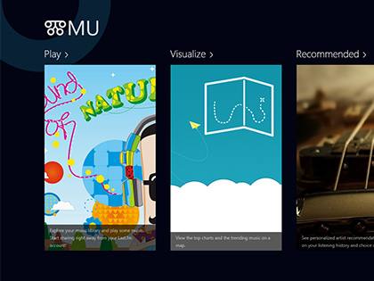
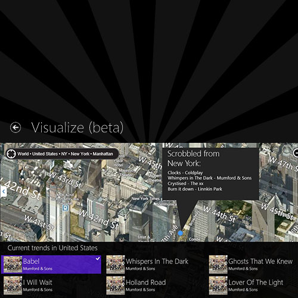

-

Music sharing via Last.fm and Twitter visualized on a map.
Myslite
This application enables people to share the music they are listening to on a map, in real-time using information from their Last.fm and Twitter accounts.
I was inspired by the semantics of music while designing the UI for the app. Similar to musical notes, ancient languages often had a meaning attached to individual syllables or letters. So I decided to use the olden Glagolitic typography as a theme for the interface. Its called 'Myslite' which means thought in Glagolitsa.
The app also displays personalised music recommendation and worldwide music trends in major cities interactively on a map. I designed the frontend as well as the backend of this application on WinRT (with C# + XAML).
Will be available on the store as soon as its out of beta.